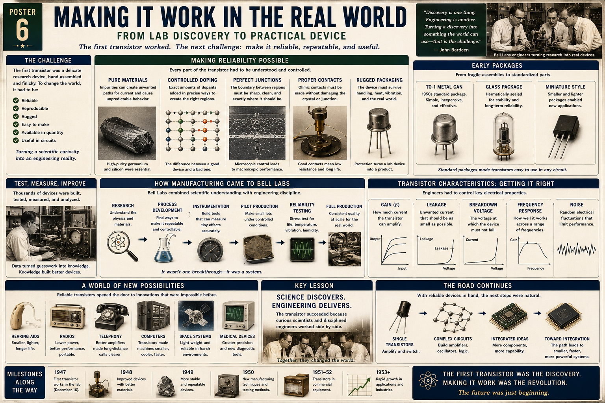

It had to be reliable
A transistor had to continue working after hours, months, temperature changes, vibration, handling, and normal circuit stress.
Poster 6 · From Discovery to Device
A lesson for Klins on the engineering transformation that followed the first transistor: turning one fragile laboratory success into a reliable, measurable, repeatable, packaged component that could be built in quantity and trusted inside real systems.

The first transistor worked, but it was not yet a product.
A transistor had to continue working after hours, months, temperature changes, vibration, handling, and normal circuit stress.
Two devices built from the same design needed to behave within predictable limits.
The device needed a process that trained workers, fixtures, instruments, and production lines could repeat in useful quantities.
The active crystal needed protection from contamination, moisture, shock, and broken connections.
Gain, leakage, breakdown voltage, frequency response, and noise all had to be tested and specified.
Engineers needed standard leads, predictable biasing, and enough documentation to design around the component.
The first transistor was a scientific event. A practical transistor had to become an engineered object—something another person could purchase, install, test, replace, and trust.
Every part of the device had to be controlled.
High-purity germanium and silicon reduced unpredictable behavior caused by contamination.
Exact dopant concentrations produced repeatable electrical behavior.
Junction shape, cleanliness, and defect density strongly affected leakage and gain.
Metal contacts had to produce low resistance without contaminating or cracking the semiconductor.
Packaging shielded the transistor from handling, moisture, vibration, dust, and thermal stress.
The practical transistor emerged from an organized chain, not one isolated breakthrough.
Physicists and materials scientists established how the device should behave.
Engineers converted laboratory steps into controlled, documented methods.
Test equipment measured tiny currents, gain, leakage, noise, and failure behavior.
Small production runs exposed hidden problems in repeatability, handling, and yield.
Devices were stressed with heat, time, vibration, humidity, and electrical overload.
Statistical control and standardized procedures made performance consistent enough for commercial use.
Building thousands of devices revealed patterns that a few laboratory samples could not. Yield data, failure analysis, drift, and variation turned guesswork into process knowledge.
A usable part needed predictable limits, not merely transistor action.
Engineers needed to know how much collector current or output change resulted from the input.
Current that flowed when the device should be off had to remain small.
The transistor needed a defined maximum voltage beyond which it might fail.
Devices had to maintain useful gain over the intended signal range.
Random electrical fluctuations limited performance in sensitive amplifiers and receivers.
Standard packages made transistors easier to handle, identify, mount, and replace.
Metal-can packages protected the semiconductor and provided a durable standard form.
Glass packages kept moisture and contamination away from sensitive internal structures.
Compact packages enabled portable radios, hearing aids, instrumentation, and dense circuit assemblies.
Electronics could scale only when components became predictable building blocks.
Designers could connect emitter, base, and collector without inspecting the internal structure.
Datasheets allowed engineers to choose bias resistors, voltage limits, loads, and operating regions.
A failed transistor could be swapped for another device of the same type instead of rebuilding the circuit.
Reliable transistors unlocked applications that fragile laboratory devices never could.
Small size and low power made wearable amplification practical.
Transistors replaced hot tubes and allowed radios to operate from small batteries.
Reliable solid-state amplifiers improved long-distance communication and reduced maintenance.
Smaller, cooler switches allowed logic systems to grow without requiring rooms of vacuum tubes.
Low weight, low power, vibration resistance, and fast startup made transistors essential for rockets, satellites, and spacecraft.
Compact, reliable amplifiers improved monitoring, diagnostics, and portable devices.
Your modern components inherit the manufacturing lessons of the 1950s.
Gain range, current limits, saturation voltage, package, and pinout exist because the device has been standardized and tested.
The black plastic or metal body shields a microscopic die and provides leads sturdy enough for real circuits.
A resistor limits base current and keeps the transistor and Raspberry Pi GPIO within safe operating conditions.
The diode across a relay coil protects the transistor from the voltage spike created when the magnetic field collapses.
Base-emitter voltage, collector-emitter voltage, load current, and temperature show whether the device is in cutoff, active operation, or saturation.
Wiring diagrams, known resistor values, test points, and documented results turn one successful breadboard into a repeatable design.
The first time your circuit works, you have a discovery. When you can rebuild it, measure it, explain it, protect it, and hand the diagram to someone else, you have begun engineering.
The practical transistor emerged through rapid refinement after 1947.
A fragile point-contact device proves that solid-state amplification is possible.
Researchers refine contacts, crystal preparation, and device geometry.
Better control of materials and fabrication reduces drift and variation.
Pilot production, standardized testing, and packaging move the transistor toward commercial use.
Solid-state devices begin appearing in practical amplifiers and electronic products.
Portable electronics, communication systems, computers, and instruments begin adopting transistors rapidly.
The first transistor was the discovery. Making it stable, packaged, testable, replaceable, and manufacturable was the revolution. Science found the effect; engineering built the system around it.